Version Control and Continuous Integration for Pipeline Developing
Agenda
Overview of Version Control in Pipeline Development [Git, GitHub]
Introduction to Continuous Integration (CI) [GitHub Action]
Best Practices & Practical Exercises
Sharing, collaboration and nf-core resources
Introduction to Version Control
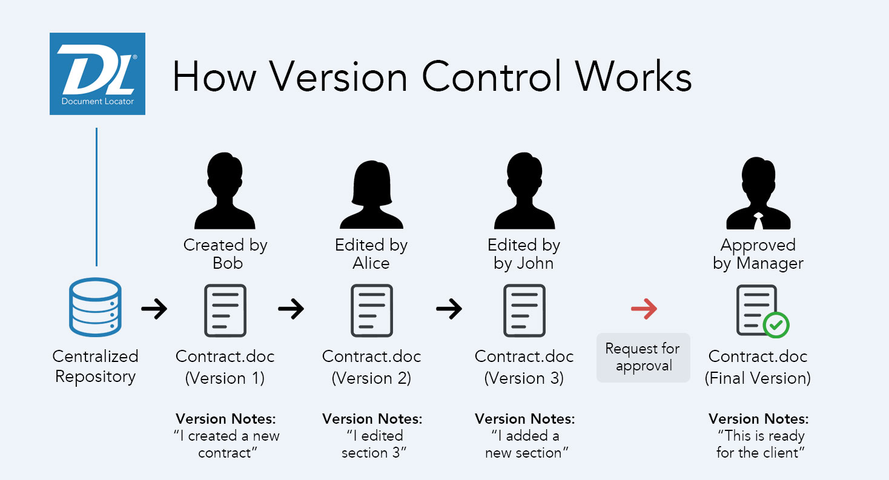
Definition
Version control, also known as source control, is a way to track changes in your code. It uses special software to record every change in a database. If a mistake happens, developers can review earlier versions to fix the error without affecting everyone else. This system helps keep the code safe from major issues and small errors alike.
https://www.atlassian.com/git/tutorials/what-is-version-control
Benefits
Collaboration
Work faster and smarter
History tracking
Reproducibility
What is Git?
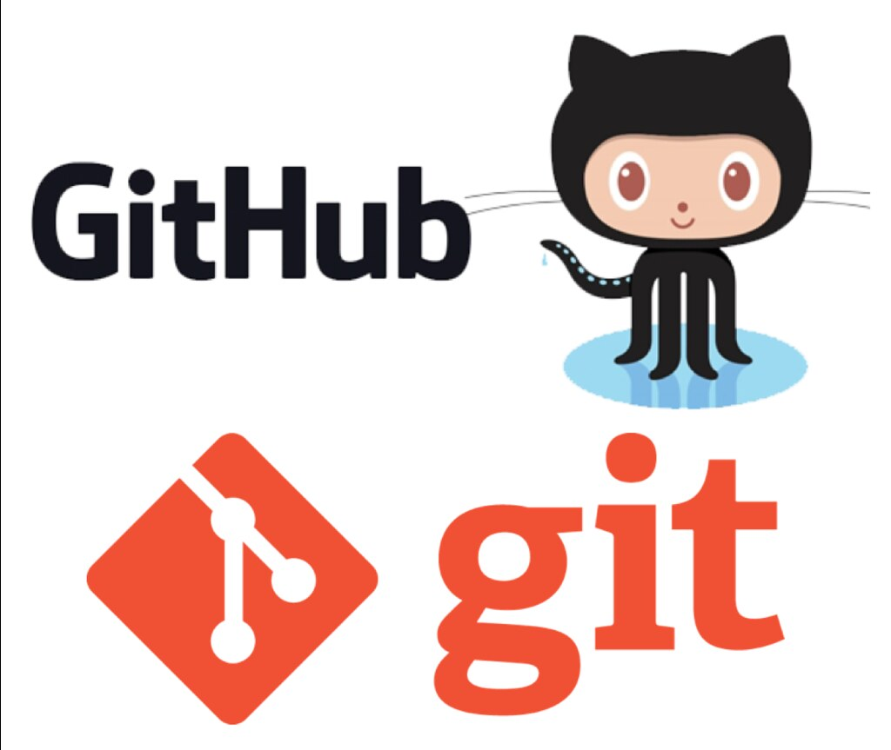
Git is a distributed version control system that tracks changes in files—especially source code—and facilitates collaboration by allowing multiple developers to work on a project simultaneously.
Git is a mature, actively maintained open-source project originally developed in 2005 by Linus Torvalds, the famous creator of the Linux operating system kernel.
# Check the status and view commit history
git status
git log --oneline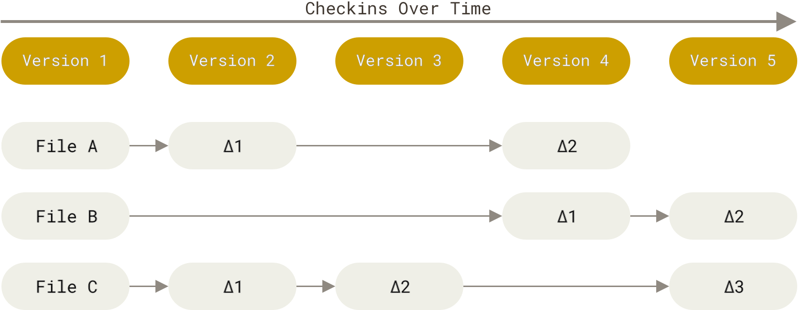
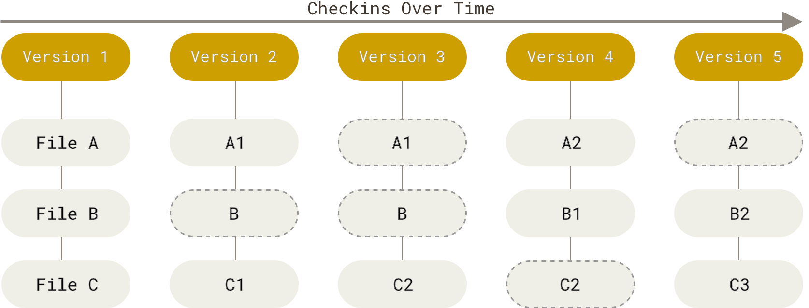
https://git-scm.com/book/en/v2/Getting-Started-What-is-Git%3F
Git Workflow Basics
Three Core Areas of a Git Repository
Working Directory: The current files you see and edit on your local machine.
Staging Area (Index): A snapshot of changes that will be included in your next commit.
Repository (History): The complete record of commits made over time.
The Typical Workflow
Edit Files: Make changes in the working directory.
Stage Changes: Use
git addto move changes to the staging area.
git add .
git add *
git add file.txt- Commit: Use git commit to permanently record the changes in the repository.
git commit -m "update README.md"Basic Command
Initializing a Repository
git init my_projectThis command creates a new Git repository in the “my_project” directory, setting up the structure needed for version control.
Staging and Committing Changes
git add index.html
git commit -m "Add initial HTML file"The git add command stages the changes in the file for commit, while the git commit records the snapshot with a descriptive message.
Viewing Commit History
git logDisplays a chronological list of commits, allowing you to review what changes were made, by whom, and when.
What is GitHub?
Definition
GitHub is a web-based platform that hosts Git repositories, offering additional features for collaboration, code review, and project management.
Key Features
Remote Repositories: Host your code online, accessible from anywhere.
Collaboration Tools: Pull requests, issues, wikis, and integrated CI/CD tools help teams collaborate effectively.
Social Coding: GitHub’s interface supports community-driven development with stars, forks, and contributions.
A team of developers can work on a project by forking a repository, creating branches for new features, and collaborating via pull requests to integrate improvements
Setting Up a GitHub Repository
Creating a New Repository
Steps:
Log in to GitHub and click the “New Repository” button.
Provide a repository name, an optional description, and choose whether the repository is public or private.
Optionally, initialize with a README file to describe the project.
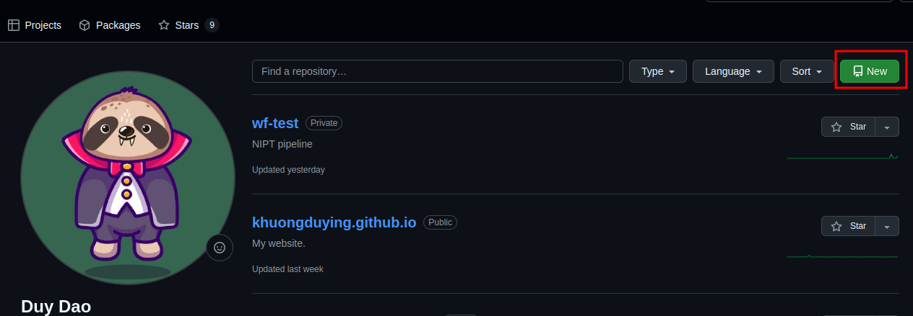
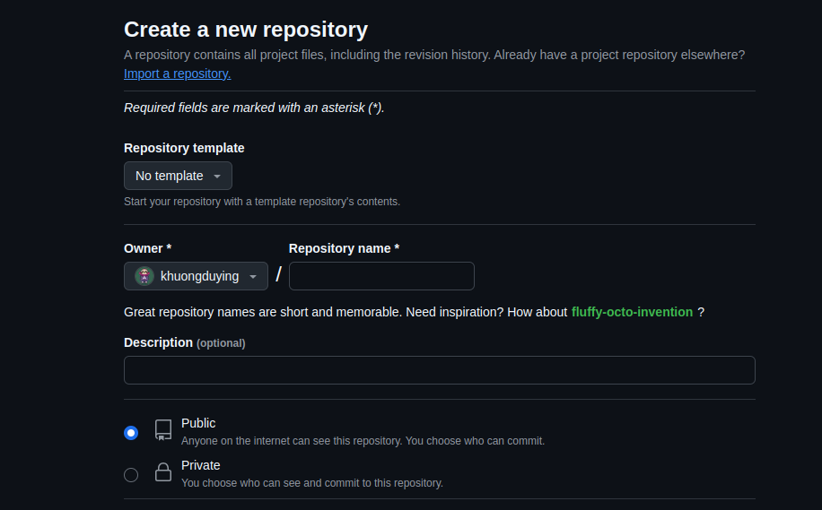
Connecting Local Git to GitHub
Copy the URL when the repo created.
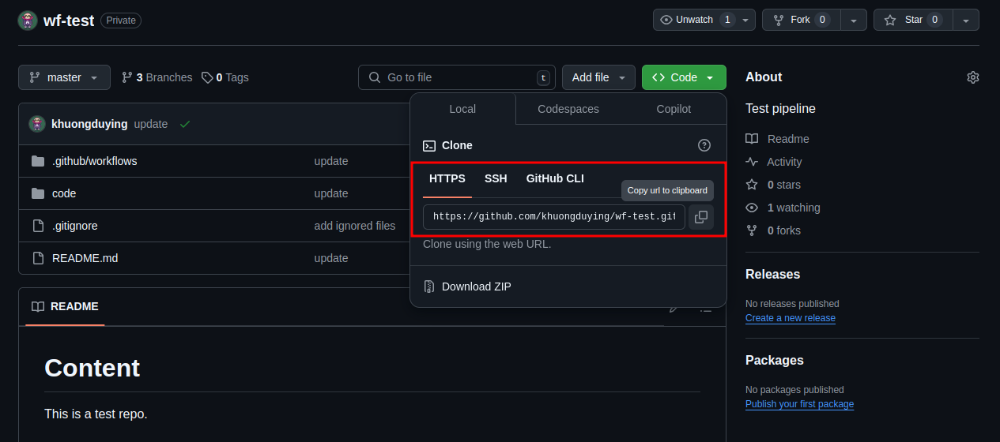
git remote add origin https://github.com/username/my_project.git
git push -u origin masterExplanation:
git remote add originsets the URL of the remote repository.git push -u origin masteruploads your local commits to the GitHub repository and sets the upstream branch for future pushes.
Collaborating on GitHub – Branches & Pull Requests
Branching Model for Collaboration
Creating a Branch
git checkout -b feature/new-featureThis creates and switches you to a new branch where you can develop a new user interface without affecting the main code.
Merging Branches
After development, merge the feature branch back into the main branch using a pull request.
<< Example >>
Pull Requests (PR)
Developers open a pull request on GitHub to propose changes, allowing team members to review, comment, and discuss the modifications.
<< Example >>
Code Review Process
A structured review process helps maintain code quality and ensures that multiple perspectives are considered before merging.
<< Example >>
Advanced Git Commands & Techniques
Merging Branches
git checkout master
git merge feature/new-uiMerges changes from the feature branch into the master branch.
Merge Conflicts
Occur when changes in two branches conflict. Resolve by editing the files manually and then completing the merge.
Use tools like git mergetool for guided resolution.
Rebasing
Rebasing rewrites commit history to create a linear progression of changes, which can make the project history cleaner.
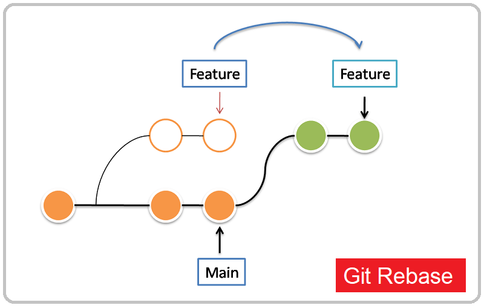
Difference between Merge and Rebase
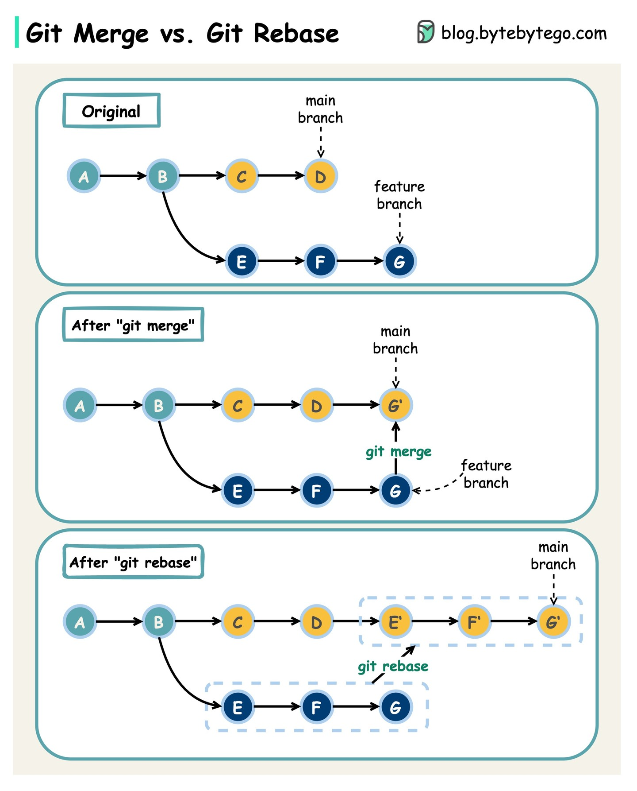
Best Practices for Storing Pipelines in Git
<< Set up a Git repo and connect to the remote >>
Link: https://khuongduying.github.io/best_practice/git/setup_remote_repo.html
Git Workflow & Branching Strategies
Introduction to GitFlow and feature branches
Manage development vs. stable releases
GitFlow is a branching model for Git that provides a structured workflow for managing software development. Introduced by Vincent Driessen (https://nvie.com/posts/a-successful-git-branching-model/ ), it outlines specific branch roles to organize your repository efficiently:
Master/Main: Contains the production-ready code.
Develop: Serves as the integration branch for features.
Feature Branches: Created off the develop branch for new features.
Release Branches: Used to prepare a new production release.
Hotfix Branches: For urgent fixes in the production code.
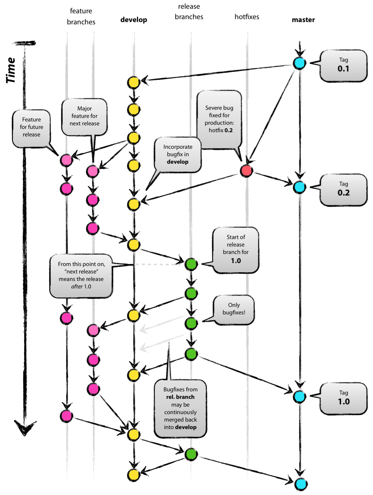
More References
https://www.atlassian.com/git/tutorials/comparing-workflows/gitflow-workflow
Install GitFlow
# Install git-flow
sudo apt-get install git-flowInitialize Git Flow in Your Repository
# Initialize GitFlow and start a new feature branch
git flow initThis command will ask you a series of questions about branch naming conventions (e.g., master/main, develop, feature, release, hotfix). You can usually accept the defaults.
Working with Feature Branches
Start a Feature
git flow feature start add-new-moduleWork on Your Feature
Make your changes, and commit them as usual:
git add .
git commit -m "Add new feature"Finish the Feature
Once your feature is complete, finish it to merge it back into develop
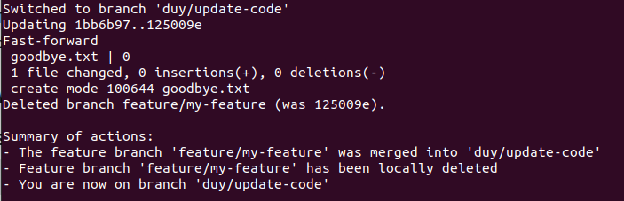
Pipeline Versioning Strategies
Introduction to Semantic Versioning (SemVer)
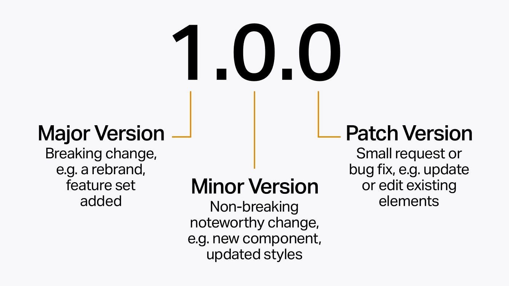
Semantic Versioning, or SemVer, is a versioning scheme that uses a three-part number format: MAJOR.MINOR.PATCH. This structure helps to communicate the nature of changes made in each new release of your pipeline.
MAJOR:
Increment this number when you make incompatible API changes or significant modifications that break backward compatibility.MINOR:
Increment this number when you add functionality in a backward-compatible manner. This signals new features without disrupting existing functionality.PATCH:
Increment this number when you make backwards-compatible bug fixes. This indicates maintenance updates without affecting functionality.
Backwards compatibility means that when you update or change something, it still works with the old stuff that was made before the update.
Managing Updates with SemVer
Using SemVer in your pipeline development means you can clearly signal the impact of changes:
Major updates (e.g., 2.0.0) indicate a shift that might require users to adjust their integration.
Minor updates (e.g., 1.1.0) add features while maintaining compatibility.
Patch updates (e.g., 1.0.1) improve stability through bug fixes without changing functionality.
Code Example
Below is an example Bash script that automates bumping the version number in a pipeline configuration file (e.g., pipeline.yml):
#!/bin/bash
# Extract the current version from the pipeline configuration file
current_version=$(grep 'version:' pipeline.yml | awk '{print $2}')
IFS='.' read -r major minor patch <<< "$current_version"
# For a patch update, increment the patch number
patch=$((patch + 1))
new_version="$major.$minor.$patch"
# Update the version in the configuration file
sed -i "s/version: $current_version/version: $new_version/g" pipeline.yml
echo "Pipeline version updated from $current_version to $new_version"Explanation
The script extracts the current semantic version from pipeline.yml.
It splits the version number into major, minor, and patch components.
For a patch update, the script increments the patch value.
Finally, it uses sed to update the version in the configuration file and outputs the new version.
This approach provides a simple and effective way to implement and manage versioning in your pipeline, ensuring that users and collaborators understand the impact of each release update.
Maintaining Stable Release Versions
Importance of Stable Releases for Reproducibility
Consistent Results:
Stable releases ensure that when you run a pipeline at a given version, it behaves the same way every time. This consistency is crucial for reproducibility, where you need to trust that results won’t change unexpectedly between runs.Reliable Benchmarking:
With stable versions, you can benchmark and compare outcomes over time without worrying that changes in the pipeline are affecting performance or outputs.User Confidence:
Stable releases give users a predictable and tested version of the pipeline, making it easier to integrate into production environments and build trust in its reliability.
Techniques for Tagging and Releasing Pipelines
Semantic Versioning (SemVer):
Adopt a versioning scheme like MAJOR.MINOR.PATCH. This communicates the nature of changes (e.g., bug fixes, new features, breaking changes) to users.Git Tagging:
Use Git tags to mark specific commits as release points. This makes it easy to retrieve or revert to a stable version of the code. For example:
git tag -a v1.0.0 -m "Stable release version 1.0.0"
git push origin v1.0.0Release Branches:
Create dedicated branches for releases (e.g., release/1.0.0) to isolate stable code from ongoing development. Once tested, these branches are merged into the main production branch.Automated Release Pipelines:
Use CI/CD tools to automate tests and deploy stable releases when certain conditions (like passing all tests) are met. This minimizes human error and ensures that only verified changes are released.Changelogs and Release Notes:
Maintain clear documentation of changes for each release. This helps users understand what’s new, what’s fixed, and what might be breaking changes.
In summary, maintaining stable release versions is key to reproducible results and user confidence. By using semantic versioning, Git tagging, release branches, and automated CI/CD pipelines, you can manage and distribute your pipeline in a reliable and systematic way.
# Changelog Entry Example
## [1.0.0] - 2025-02-16
### Added
- Initial release of Nextflow pipeline for data processing.Manual Changelog with a Markdown File
One popular format is the Keep a Changelog style, which provides a clear structure. For example:
# Changelog
All notable changes to this project will be documented in this file.
## [Unreleased]
### Added
- New feature X.
### Fixed
- Bug related to Y.
## [1.0.0] - 2025-02-16
### Added
- Initial release.Update Regularly:
Each time you make changes or prepare a new release, update the changelog with details of added, changed, or fixed items.
Using GitHub Releases
GitHub Releases Feature
Instead of—or in addition to—a CHANGELOG.md file, you can use the GitHub Releases feature:
Go to the “Releases” section in your GitHub repository.
Click “Draft a new release.”
Tag the release (e.g., v1.0.0) and write release notes detailing the changes.
This creates an accessible record of changes tied to specific Git tags.
Automated Changelog Generation
Automation Tools:
Tools like semantic-release or standard-version can generate changelogs automatically based on your commit messages and tags.GitHub Actions Integration:
You can set up a GitHub Action that triggers on new tags or pull requests. For example, you might add a workflow that runs semantic-release, which:Determines the next version based on commit history.
Updates the changelog.
Creates a Git tag and GitHub release with the release notes.
An example snippet for a GitHub Action workflow might look like:
name: Release
on:
push:
tags:
- 'v*'
jobs:
release:
runs-on: ubuntu-latest
steps:
- name: Checkout code
uses: actions/checkout@v3
- name: Run semantic-release
env:
GITHUB_TOKEN: ${{ secrets.GITHUB_TOKEN }}
run: npx semantic-releaseIntroduction to Continuous Integration (CI)
Definition
Continuous Integration (CI) is a software development practice where developers frequently merge code changes into a shared repository. Every change is automatically built and tested to detect integration issues early, ensuring that new code works well with the existing codebase.
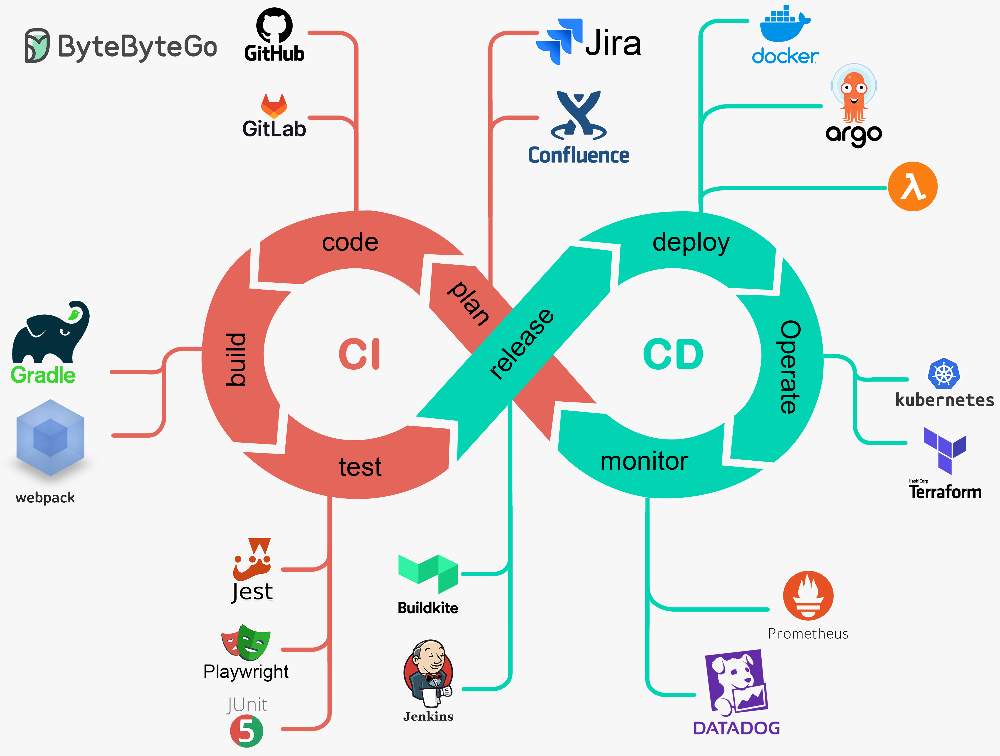